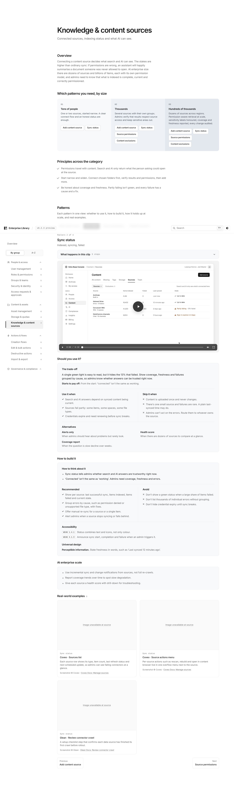

Enterprise Library
A pattern library for enterprise software.
Know what you need
Which patterns matter at your size.
See it work
Every pattern, shown in a short clip.
Decide, then build
The trade-offs, and how to build it right.


